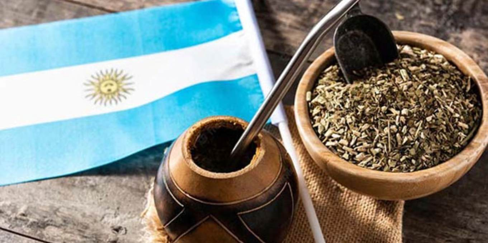

O Mate
O mate tem raízes nos povos indígenas Guaranis, que consumiam as folhas da erva-mate como bebida e moeda de troca. Com a chegada dos colonizadores espanhóis, o hábito foi adotado e se espalhou por toda a bacia do Prata, tornando-se um símbolo de identidade, união e tradição que resiste e une os argentinos até hoje,mais do que uma bebida, o mate é um ritual social sagrado na Argentina. Compartilhar a cuia e a bomba com amigos e familiares representa união, hospitalidade e tradição.

O Tango
O tango nasceu no final do século XIX nos subúrbios pobres e portuários de Buenos Aires e Montevidéu, fruto da mistura cultural entre imigrantes europeus (especialmente italianos e espanhóis), crioulos e afro-argentinos. Inicialmente marginalizado e associado ao submundo, o ritmo ganhou aceitação nas classes altas e conquistou a Europa no início do século XX. Sua "era de ouro" ocorreu entre as décadas de 1930 e 1950, com grandes orquestras e cantores (como Carlos Gardel), antes de se renovar mundialmente nos anos 1950 e 1960 pelas mãos de Astor Piazzolla, tornando-se o grande símbolo cultural da Argentina.

A Paixão pelo Futebol
O esporte foi introduzido no final do século XIX por imigrantes ingleses, que fundaram os primeiros clubes e organizaram a liga argentina em 1891 (uma das mais antigas do mundo fora do Reino Unido). O país se consolidou como uma das maiores potências do planeta, conquistando três Copas do Mundo (1978, 1986 e 2022) e revelando ícones históricos que marcaram a história do esporte mundial, como Diego Maradona e Lionel Messi.O futebol na Argentina é quase uma religião o esporte molda a identidade do país, lotando estádios com torcidas vibrantes e apaixonadas.